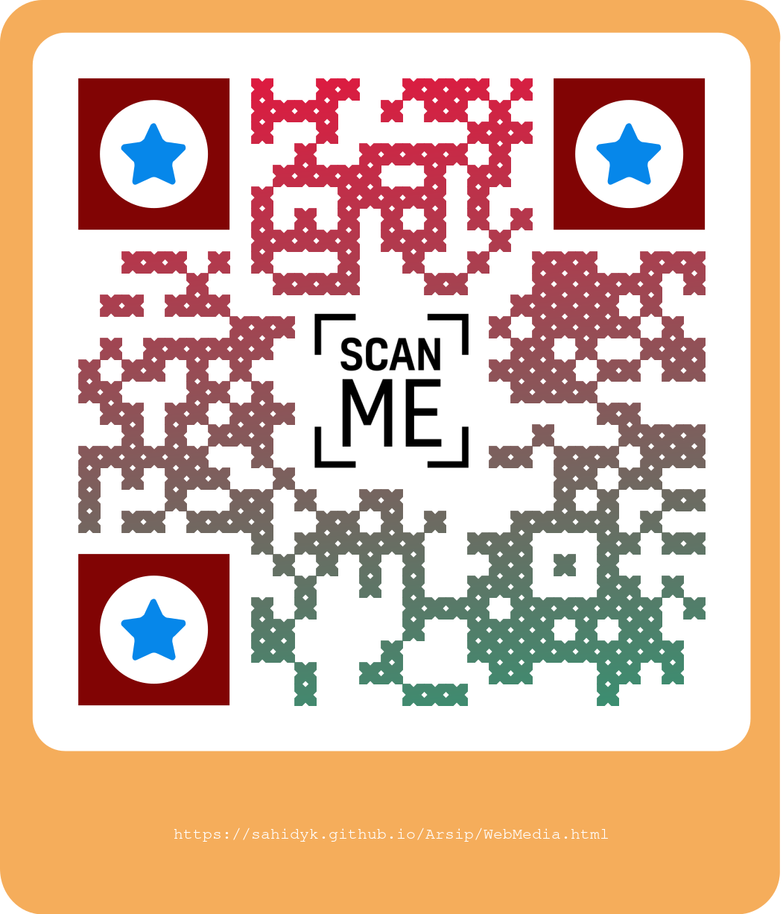

Berikut adalah daftar beberapa Web mahasiswa hasil Proyek MK Media Pembelajaran Matematika Virtual yang dibuat oleh mahasiswa. Mahasiswa membuat media pembelajaran matematika virtual menggunakan teknologi HTML5 dan JavaScript, termasuk GeoGebra, Mathigon, dan H5P (menggunakan Lumi) yang dipadukan dengan HTML5.
https://angelhappy.w3spaces.com/ (Pengukuran Luas dan Keliling Persegi dan Persegi Panjang)
https://teoremapythagoras1.w3spaces.com/ (Teorema Pythagoras)
https://ayobelajartrigonometri.w3spaces.com/ (Trigonometri)
https://fungsikuadrat.w3spaces.com/index.html (Fungsi Kuadrat)
https://fifinurrohmah.w3spaces.com/ (Segitiga dan Segi Empat)
https://mathpedia.w3spaces.com/ (Bangun Ruang Sisi Datar)
https://lintangcahya.w3spaces.com/materi-perbandingan.html (Perbandingan)
https://marisamaulani.w3spaces.com/index.html (Bangun Ruang)
https://rofiusyani.w3spaces.com/ (Persamaan Lingkaran)
https://nevitakk22.w3spaces.com/ (Bilangan Bulat)
https://reginnn.w3spaces.com (Bangun Ruang Sisi Lengkung)
https://e-matrixeducentre.w3spaces.com/ (Matriks)
https://siskath.w3spaces.com (PECAHAN)
https://yoramassing.github.io/operasihitungcampuran/operasi%20hitung%20campuran.html (Operasi Hitung)
https://zafier.w3spaces.com/ (Penyajian Data)
https://iraelika.w3spaces.com/ (Persamaan dan Pertidaksamaan)
Sahid – Resources – GeoGebra (Kumpulan Media GeoGebra, sebagian)
Kumpulan Tulisan Sahid (sahidyk@gmail.com, sahid@uny.ac.id) | Publikasi
https://mathigon.org/ (Kumpulan materi pelajaran dan Media Pembelajaran matematika interaktif )
https://jsxgraph.uni-bayreuth.de/share/ (Kumpulan Media Pembelajaran Matematika berbasis JavaScript JSXGraph)
https://cindyjs.org/gallery/main/ (Kumpulan Media Pembelajaran Matematika berbasis JavaScript CindyJS)
https://www.gogeometry.com/index.html (Koleksi Media Pembelajaran Geometri - Problem Solving)
https://www.imaginary.org/ (Pameran Matematika Terbuka)
https://artofproblemsolving.com/company (Web The Art of problem Solving)
https://www.mathed.page/ (Koleksi Media dan Materi Pembelajaran Matematika)
https://math24.net/index.html (2500 Solved Problems covering all major topics from Trigonometry and Set Theory to Systems of Differential Equations)
http://thewessens.net/ClassroomApps/index.html?topic=home (The Mathenæum: Mathematical explorations, games, and learning)
https://www.onemathematicalcat.org/index.htm (Tree of Maths koleksi lebih dari 400 pelajaran Matematika oleh Dr. Carol JVF Burns)
https://mathstat.slu.edu/escher/index.php/Math_and_the_Art_of_M._C._Escher (Matematika dan Seni)
https://www.mathhappens.org/ (Melihat matematika di mana-mana)
https://blossoms.mit.edu/ (Koleksi Video pembelajaran Matematika)
https://mathshistory.st-andrews.ac.uk/ (Situs Sejarah matematika)
https://www.cambridgemaths.org/ (Situs Pendidikan Matematika)
https://www.transum.org/Software/ (Koleksi Media Pembelajaran matematika Digital)
https://visualgo.net/en (Media pembelajaran Algoritma dan Pemrograman

This list was created by Sahid (sahid@uny.ac.id, sahidyk@gmail.com), last updated May, 25, 2023.